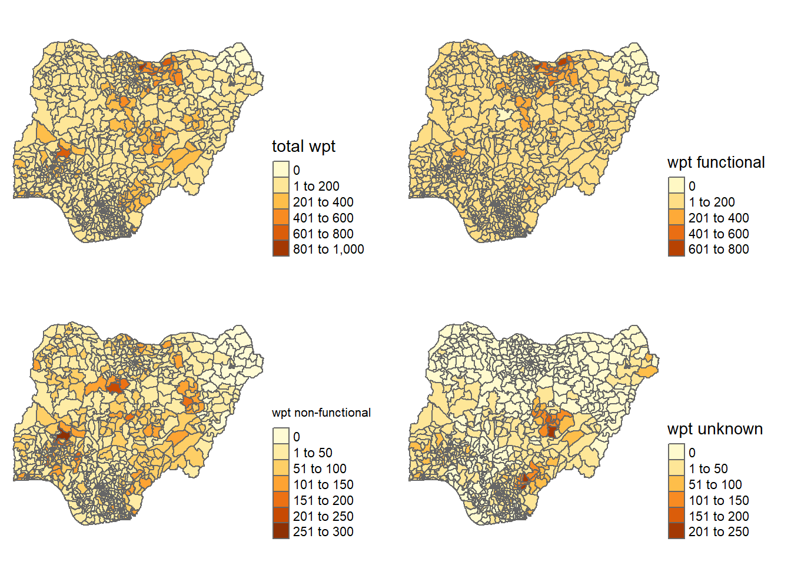

pacman::p_load(sf,tidyverse,tmap,spdep,funModeling)Inclass Exercise 2
Detection of clusters and outliers of Nigeria’s water point
Overview
Preparation
1.1 Packages will be used
sf
tidyverse
tamp
spdep
funModeling
1.2 Importing water point data
In this exercise, we will use two type of geospatial data. One is the boundary data of the Nigeria, one is the water point data.
wp <- st_read(dsn = "geodata",
layer = "geo_export",
crs = 4326) %>%
filter(clean_coun == "Nigeria")Then, we save the the extracted data into the folder geodata.
write_rds(wp,"geodata/wp_nga.rds")1.3 Importing boundary data
nga <- st_read(dsn = "geodata",
layer = "geoBoundaries-NGA-ADM2",
crs = 4326)2. Data wrangling
2.1 Tackling with missing values
The raw data has missing values, so we should recode NA values in status_cle field into Unknown by using code chunk below.
wp_nga <- read_rds("geodata/wp_nga.rds") %>%
mutate(status_cle = replace_na(status_cle, "Unknown"))2.2 Extracting functional water points
We use EDA method to get the distribution of status_cle field.
freq(data=wp_nga,
input = 'status_cle')We use filter() to select Functional, Functional but not in use, Functional but needs repair in status_cle field.
wpt_functional <- wp_nga %>%
filter(status_cle %in%
c("Functional",
"Functional but not in use",
"Functional but needs repair"))
write_rds(wpt_functional,"geodata/wpt_functional")Then we check the distribution of the filtered data.
freq(data=wpt_functional,
input = 'status_cle')2.3 Extracting non-functional water point
We use filter() in dplyr package to select non-functional water point.
wpt_nonfunctional <- wp_nga %>%
filter(status_cle %in%
c("Abandoned/Decommissioned",
"Abandoned",
"Non-Functional",
"Non functional due to dry season",
"Non-Functional due to dry season"))
write_rds(wpt_nonfunctional,"geodata/wpt_nonfunctional.rds")2.4 Extracting water point with unknown class
We select data of water point with unknown class.
wpt_unknown <- wp_nga %>%
filter(status_cle == "Unknown")2.5 Count of point-in-polygon
We use st_intersects count how many points in different classes intersect with polygons, and merge the number into the original table nga.
nga_wp <- nga %>%
mutate(`total wpt` = lengths(
st_intersects(nga, wp_nga))) %>%
mutate(`wpt functional` = lengths(
st_intersects(nga, wpt_functional))) %>%
mutate(`wpt non-functional` = lengths(
st_intersects(nga, wpt_nonfunctional))) %>%
mutate(`wpt unknown` = lengths(
st_intersects(nga, wpt_unknown)))Saving the analytical data base.
nga <- nga_wp %>%
mutate(pct_functional = `wpt functional`/`total wpt`) %>%
mutate(`pct_non-functional` = `wpt non-functional`/`total wpt`)Now we save the data table into rds format with the chunk below. And delete other raw data.
write_rds(nga_wp, "geodata/nga_wp.rds")3. Visualizing the spatial distribution of water points
With the numbers of water points in the polygons to fill the map, we use qtm to draw the spatial distribution to show the degree of sparseness.
nga_wp<-read_rds("geodata/nga_wp.rds")
total <- qtm(nga_wp, "total wpt")
wp_functional <- qtm(nga_wp, "wpt functional")
wp_nonfunctional <- qtm(nga_wp, "wpt non-functional")
unknown <- qtm(nga_wp, "wpt unknown")
tm_layout(legend.width=0.47,legend.height = 0.5,legend.position = c("right","bottom"),legend.hist.height =0.2,legend.hist.width = 0.05) $tm_layout
$tm_layout$legend.position
[1] "right" "bottom"
$tm_layout$legend.width
[1] 0.47
$tm_layout$legend.height
[1] 0.5
$tm_layout$legend.hist.height
[1] 0.2
$tm_layout$legend.hist.width
[1] 0.05
$tm_layout$style
[1] NA
attr(,"class")
[1] "tm"tmap_arrange(total, wp_functional, wp_nonfunctional, unknown, asp=1, ncol=2)